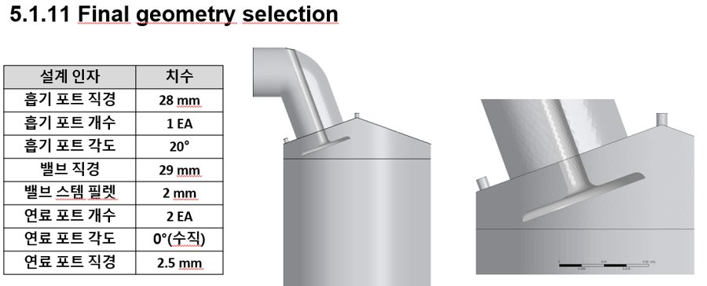
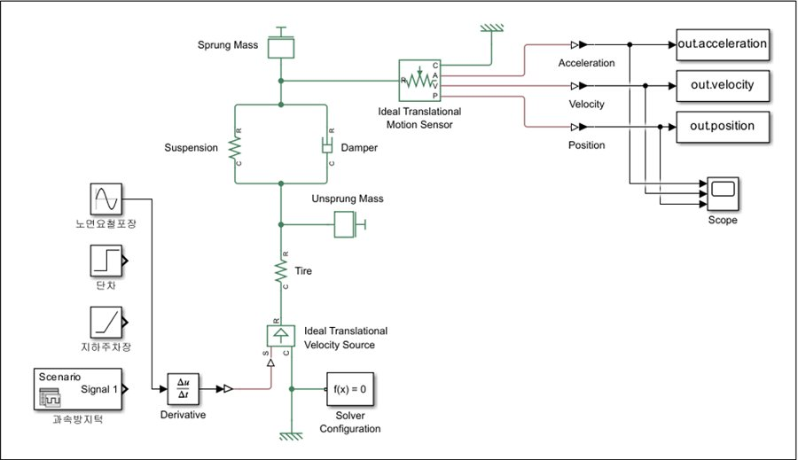
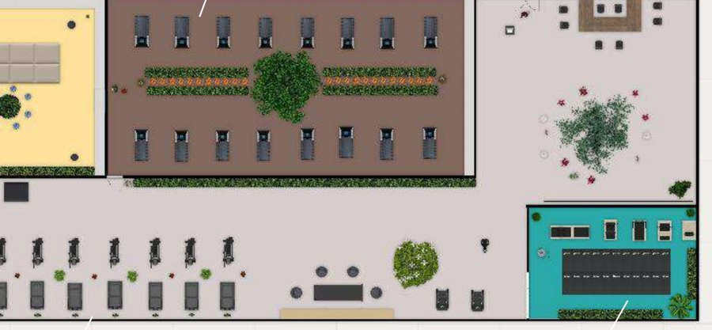

Planetary gear for an in-wheel motor — resonance-free, minimum volume
Capstone, Mar – Jun 2025 · thesis Nov 2025Team of 3MATLAB, ANSYS Modal, ROMAX
- Target: IONIQ 5-class wheel torque with four EMRAX 228 motors; design variables module, tooth counts, face width and shaft diameter under ISO 6336 / AGMA strength limits.
- More than 3.7 million combinations were filtered to 98,530 feasible gear sets. Instead of running modal FEM on each, we trained a GPR surrogate on ANSYS results and checked it on a geometry it had not seen: mean relative error 1.91%.
- Final set (module 2.68, 60T/12T, face width 59 mm, 3.94×10⁶ mm³) re-checked in ANSYS and ROMAX: SH 3.24, SF 3.18, no gear-mesh resonance within ±10%.
Thesis (PDF)Slides (PDF)

Intake-port geometry for fuel–air mixing in a single cylinder
CFD course, Mar – Jun 2025Midterm team of 4 · final soloCATIA V5, Ansys Fluent 25R1
- Midterm (team): intake angle 10–30° with air only, SST k-ω, Poly-Hexcore mesh. I owned the 20° case and compiled the report.
- Final (solo): dynamic mesh at 1,600 rpm with n-octane injection, Realizable k-ε. Compared intake angle, fuel-port orientation and valve fillet R2–R8 by RMSE of fuel distribution and vortex-core patterns, not by how the contours looked.
- Chose 20° intake, a vertical centre fuel port and an R2 fillet. Limitation I wrote down: the grid count was too low to call the solution converged.
Final report (PDF)Midterm (PDF)

Multiphase tank-filling simulation
Undergraduate research, Sogang University, Jul – Aug 2025SoloAnsys Fluent (VOF)
- 2D free-surface flow of water entering an empty tank. The first runs diverged with residuals above 10²⁰; the fix was the Courant condition — 1 mm cells, ~1 m/s, CFL 0.2 — which bounds the time step at 0.0002 s, then 10,000 steps for 2 s of flow.
- Compared VOF with the coupled VOF–Level Set model on interface sharpness before settling on the coupled model.
Lab-meeting report (PDF)

Quarter-car suspension: picking a damping ratio
Course project, Nov – Dec 2024Team of 4MATLAB Simulink / Simscape
- 2-DOF model (sprung 450 kg, unsprung 50 kg; k 12,500 and 160,000 N/m) driven by four road inputs: washboard, 3 cm step, parking ramp, speed bump.
- Swept ζ from 0.25 to 1.0. Higher damping cut the number of rebounds but raised peak body acceleration, so we defined "comfortable" as no second rebound at the lowest peak and chose ζ = 0.4 (c = 1,900 N·s/m).
Slides (PDF)

Heat loss in a commercial pizza oven
Heat-transfer course, Mar – Jun 2024Team of 3Inventor, ANSYS Steady-State Thermal
- Modelled conduction, convection and radiation for a wood-fired oven and compared wall thicknesses: maximum heat flux fell from 6.86×10⁶ to 2.83×10⁶ W/m² with the thicker wall. I ran the ANSYS cases and the convection coefficients.
- What I got wrong: I used a forced-convection correlation (Dittus–Boelter, h ≈ 105.7 W/m²K) where the oven interior is closer to natural convection. I only saw it after submission. Since then I write down the assumptions behind a formula before I use it.
Report (PDF)

WattFit — an energy-harvesting gym in an unused subway corridor
Hyundai Motor Chung Mong-Koo Foundation, Onso Futures College, Jun – Aug 2024Team lead, 4 people
- Proposed fitting the 3,075 m² unused transfer corridor at Sindang station with 62 energy-harvesting machines, estimated at about 21,700 kWh a year.
- I ran the schedule, the user survey, the energy and CO₂ estimate and the final pitch. When the design and engineering members disagreed on priorities, we let the survey decide. Selected as a best presentation team.
Deck (PDF)
